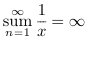

Contents
Summary
The command \overset is used for displaying one part of a formula above another one in math mode.
Settings
Description
Examples
Custom sum operator
-
\startTEXpage \startformula \overset{\infty}{\underset{n = 1}{\mathrm{sum}}} \frac{1}{x} = \infty \stopformula \stopTEXpage
- 